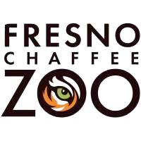

The Vietnamese mossy frog is a semi-aquatic, nocturnal amphibian renowned for its bumpy, green-and-brown skin that mimics a clump of moss or lichen.

Poison dart frogs are small, brightly colored amphibians belonging to the family Denaturation, native to the tropical rain forests of Central and South America.

The smooth sided toad is a large Amazonian toad, males reach about 15cm and females up to 17-25cm, with smooth skin, reddish brown coloration, and potent bufotoxin secreted from parotoid glands.

The magnificent tree frog is a large, bright green Australian tree frog with distinctive yellow undersides and prominent parotoid glands

The green tree frog is a small-to-medium arboreal frog known for its bright green coloration, adhesive toe pads, and nocturnal insectivorous behavior